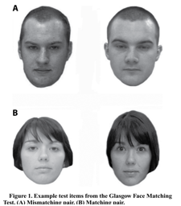
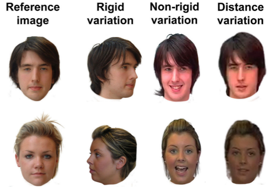
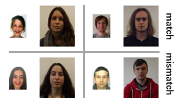
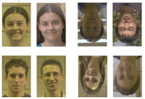

第 7 章 面孔加工能力测试
汇总：郭沫然
更新于：2024-12-16
7.1 格拉斯哥面孔匹配测试
格拉斯哥面孔匹配测试（Glasgow Face Matching Test, GFMT）
- GFMT (Long) 包括168对面孔每个张面孔为全脸图像、中性表情。
- 所有的图像均在同一背景拍摄，距离为90厘米。
- 两张图像的拍摄间隔大约为15分钟每个身份面孔，分别使用相机(相机1:富士FinePix0800Zoom, 600万像素)拍摄的全脸图像；摄像机(相机2:松下NV-DS29B DS29)拍摄的相同姿势并取其中一帧图像。
- 所有的图像沿头部周围整齐裁剪，删除背景和衣服，大小调整为350像素宽，以72 ppi的分辨率灰度存储。
- 测试构建成对的刺激时，两面孔图像中鼻梁间水平距离为500像素有一半是同脸试次，同一人的两张图像并排呈现，这84身份面孔也被用于不同面孔的试次，与数据库中一张相似面孔匹配呈现。
- GFMT (Short) 只包含40对面孔这个测试的项目从完整版本中最难的项目选取选出了导致错误最多的20对匹配项目和20对不匹配项目

7.2 格拉斯哥面孔匹配测试2
格拉斯哥面孔匹配测试2（Glasgow Face Matching Test 2, GFMT2）
- GFMT2使用与GFMT相同的图像来源-格拉斯哥不熟悉面孔数据库(Glasgow Unfamiliar Face Database, GUFD)构建。
- 所有匹配和不匹配的配对都不同于GFMT中使用的配对。
- 对每一个原始面孔身份分别创建三种不同变化材料：使用单反相机捕获头部角度刚性变化的静态图像；使用摄像机记录被试在说话和做出手势时面部运动的非刚性变化；从视频记录中采样包含姿势和头部角度轻微变化的图像，被试距离相机2米（原90厘米），从而引入相机到被试的距离变化分别对每一个变化图像进行配对。
- GFMT2简短版本(GFMT2-S)不包含重复的面部身份，只包含三种变化中的一种配对，包括两个难度相同的40项测试表格, GFMT2-sa和GFMT2-sb，共80项。
- 使用彩色图像。

7.3 肯特面孔匹配测试
肯特面孔匹配测试（Kent Face Matching Test, KFMT）
- 使用材料来自肯特大学面孔数据库（Kent University Face Database, KUFD）。
- 在实验室拍摄的面孔照片，中性表情（用摄像机记录下被试旋转头部向不同方向看的过程）。
- 相应被试的ID照片ID照片不受表情、姿势或图像捕捉设备的限制，为变异性的重要来源ID照片在实验室照片拍摄前至少三个月获得实验室照片和ID照片之间的平均时间间隔约为8.8个月。
- KFMT(Short) 由来自KUFD的40对高加索身份面孔对(20对男20对女)组成每对面孔由一张实验室照片和一张ID照片组成这些实验室照片被裁剪成只包含头部和肩部，缩放为283x332像素的大小，分辨率为72ppi，并被放置在白色背景右侧ID照片的尺寸为142x192像素，分辨率为72ppi，放置在背景的左侧。
- 在KFMT的简短版本的40对图像中，20对为相同的身份；20对不同的身份，根据头发颜色、面部和眉毛形状方面的视觉相似性进行配对

7.4 伦敦面孔匹配测试
模特面孔匹配测试（Models Face Matching Test, MFMT）
- 135名男性模特的180张全彩图片，从一个专业模特作品集网站上获取。
- 图像均为正面面孔，被裁剪为只显示面部图像以300 × 420像素的大小以彩色呈现。
- 180张全彩图像被分为45个匹配试验和45个不匹配试验这些配对是通过6个人根据感知到的相似性将384张男性模特的面部图像分类成堆来预先确定的。
- 从所有试次中选出90个最困难的试验，并将它们分成三个独立但相同难度的部分，每个部分包含15个匹配和15个不匹配的试验。
- 对于MFMT (Long)，每名被试完成所有三个部分每个部分使用的刺激是平衡的，即整个实验中，每个面孔对在三个区块中出现的频率相同
7.5 牛津面孔匹配测试
牛津面孔匹配测试（Oxford Face Matching Test, OFMT）
- 从多个公开数据库中选取成对的面孔刺激所有的数据库都包含面孔对是同一个人还是不同人的信息。
- 面孔均为自然状态，年龄和性别各异，白种人，正面面孔，有头发，没有背景戴眼镜的照片被排除在外。
- 图片被裁剪成3:4的比例，确保刺激大部分面积为面孔这些图像通过人脸识别算法进行相似性评估匹配，并以灰度图像呈现给被试。
- 对于OFMT (Long)，成对面孔刺激在1600毫秒内并排呈现，被试在1(非常不相似)到100(非常相似)的范围内判断这些面孔的相似性，以及明确判断面孔图像是否来自同一个人所有刺激使用标准呈现时间(不是根据被试的反应进行测试)。
- 用十对刺激作为注意力检测试次，用完全相同的面孔图像构建了五组相同的配对，同时用不同性别的面孔图像构建了五组不同的配对（针对人类被试）
7.6 专家化面孔匹配测试
专家化面孔匹配测试（Expertise in Facial Comparison Test, EFCT）
- 该测试材料来自不同环境条件下的自然面孔图像的面孔图像数据集该数据集专门用于在具有挑战性的条件下测试面孔识别算法，或针对具有面孔识别相关专业知识和经验的人群（例如：法医）。
- 面孔均为正面图像，所有面孔图像在对照明、表情和外观等因素控制最小的情况下拍摄。
3.根据人脸识别算法将面孔图像对依据匹配得分分为三个子集：“好”，“中等”，“差”， EFCT只包含来自“中等”和“差”两个部分的图像对。
- 被试在拍摄时间不同的两种条件下完成直立和倒立图像对的EFCT（人类被试）。
- 回答问题选项: (Ⅰ) 确定他们是同一个人; (Ⅱ) 认为他们是同一个人; (Ⅲ) 不知道; (Ⅳ) 认为他们是不同的人; (Ⅴ) 肯定他们是不同的人。 6. 总的来说，EFCT由168对图像组成 (一半相同，一半不同)，其中一半分配给直立测试，一半分配给倒立测试
